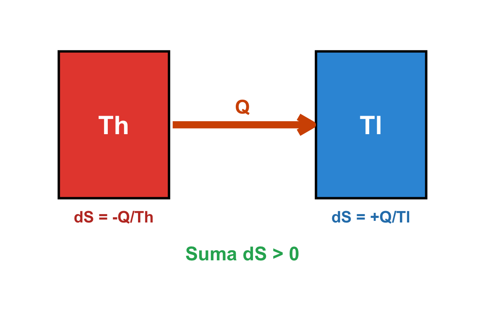

W7: II Zasada Termodynamiki - II
Entropia i III Zasada Termodynamiki
prof. UPP dr hab. inż. Marek Urbaniak
Wydział Inżynierii Środowiska i Inżynierii Mechanicznej


Agenda Wykładu
- Nierówność Clausiusa (Wyprowadzenie)
- Entropia (\(S\)) - Definicja Termodynamiczna
- Zasada Wzrostu Entropii (Strzałka Czasu)
- Obliczanie Zmian Entropii (Gazy, Ciecze)
- III Zasada Termodynamiki (Zero Bezwzględne)
1. Nierówność Clausiusa
Dla dowolnego cyklu termodynamicznego (odwracalnego lub nie) zachodzi relacja:
\[ \oint \frac{đ Q}{T} \le 0 \]
Całka okrężna z ilorazu ciepła do temperatury (na granicy układu) jest zawsze niedodatnia.
Interpretacja
- \(= 0\): Cykl jest odwracalny (idealny, brak tarcia).
- \(< 0\): Cykl jest nieodwracalny (rzeczywisty, straty).
- \(> 0\): Cykl jest niemożliwy (łamie II Zasadę).
1. Nierówność Clausiusa
2. Entropia (\(S\))
Skoro dla procesu odwracalnego \(\oint \frac{đ Q_{rev}}{T} = 0\), to całka ta nie zależy od drogi przemiany, a jedynie od stanu początkowego i końcowego.
Definiujemy nową funkcję stanu - Entropię (\(S\)):
\[ dS = \left( \frac{đ Q}{T} \right)_{rev} \]
Jednostka: \([J/K]\) (lub dla entropii właściwej \(s\): \([J/(kg\cdot K)]\)).
Co to oznacza fizycznie?
Entropia jest miarą nieuporządkowania układu (statystycznie) oraz miarą niezdolności energii do wykonania pracy.
Entropia a Kierunek Przekazu Ciepła
Dlaczego ciepło płynie od gorącego do zimnego?
Ciało A (\(T_H\)) oddaje ciepło \(Q\):
\[ \Delta S_A = \frac{-Q}{T_H} \]
(Spadek entropii)
Ciało B (\(T_L\)) pobiera ciepło \(Q\):
\[ \Delta S_B = \frac{+Q}{T_L} \]
(Wzrost entropii)

Suma zmian:
\[\Delta S_{tot} = \Delta S_A + \Delta S_B = Q (\frac{1}{T_L} - \frac{1}{T_H})\] Ponieważ \(T_H > T_L\), to wynik jest DODATNI. Całkowita entropia rośnie! Proces spontaniczny.
3. Zasada Wzrostu Entropii
Dla układu izolowanego (adiabatycznego):
\[ \Delta S_{izol} \ge 0 \]
- W procesach odwracalnych entropia układu izolowanego jest stała (\(\Delta S = 0\)).
- W procesach rzeczywistych (nieodwracalnych) entropia układu izolowanego ZAWSZE ROŚNIE.
Adnotacja
Traktując Wszechświat jako układ izolowany, jego entropia nieustannie rośnie. To wyznacza “Strzałkę Czasu” i być może uniemożliwia podróże w czasie (w przeszłość).
Generacja Entropii (\(S_{gen}\))
Możemy zapisać bilans entropii dla dowolnego procesu:
\[ \Delta S_{ukladu} = \int \frac{đ Q}{T_{granicy}} + S_{gen} \]
- \(S_{gen}\): Entropia generowana wewnątrz układu przez nieodwracalności (tarcie, mieszanie, spalanie).
- \(S_{gen}\) nigdy nie może być ujemne!
- \(S_{gen} > 0\): Proces rzeczywisty.
- \(S_{gen} = 0\): Proces odwracalny.
4. Obliczanie Zmian Entropii
Dla ciał nieściśliwych (Ciecze, Ciała stałe)
\(v \approx const\), \(C_p \approx C_v = C\).
\[ \Delta s = C \cdot \ln \left( \frac{T_2}{T_1} \right) \]
Dla Gazów Doskonałych
Mamy dwa wzory (zależnie od znanych zmiennych):
- \[ \Delta s = C_p \ln \left( \frac{T_2}{T_1} \right) - R \ln \left( \frac{p_2}{p_1} \right) \]
- \[ \Delta s = C_v \ln \left( \frac{T_2}{T_1} \right) + R \ln \left( \frac{v_2}{v_1} \right) \]
Uwaga: W procesie adiabatycznym odwracalnym (izentropowym), \(\Delta s = 0\).
Wzory te wtedy służą do wyprowadzenia \[pv^\kappa=const\]
Wykres T-s i Ciepło
Dla procesu odwracalnego: \[ Q_{rev} = \int_{1}^{2} T \, dS \]
Na wykresie T-s, pole powierzchni pod krzywą przemiany reprezentuje ciepło wymienione w procesie (podobnie jak pole na p-v reprezentuje pracę).
- Proces w prawo (\(ds > 0\)): Pobieranie ciepła.
- Proces w lewo (\(ds < 0\)): Oddawanie ciepła.
- Proces pionowy (\(ds = 0\)): Adiabata (brak ciepła).

5. III Zasada Termodynamiki
Sformułowana przez Nernsta:
Entropia kryształu substancji doskonałej w temperaturze zera bezwzględnego (\(0 K\)) jest równa ZERO.
\[ \lim_{T \to 0} S = 0 \]
Konsekwencje:
- Daje “punkt odniesienia” dla entropii. W przeciwieństwie do energii wewnętrznej \(U\) (gdzie znamy tylko \(\Delta U\)), dla entropii możemy wyznaczyć wartość bezwzględną.
- Nie da się osiągnąć zera bezwzględnego w skończonej liczbie kroków.
Podsumowanie W7
- Nierówność Clausiusa: Podstawa matematyczna II Zasady.
- Entropia: Funkcja stanu. Rośnie w procesach nieodwracalnych, stała w odwracalnych (izentropowych).
- Kierunek: Procesy biegną tam, gdzie rośnie całkowita entropia.
- Wzory: \[ \Delta s = C_p \ln(T_2/T_1) - R \ln(p_2/p_1) \]
- III Zasada: W \(0 K\) entropia wynosi 0 (stan idealnego porządku).
Zapowiedź W8
Ubrojeni w wiedzę o gazach (W4), I Zasadzie (W2) i entropii (W7), przeanalizujemy wszystkie Przemiany Gazowe (izobary, izochory, adiabaty) w jednym, kompleksowym wykładzie.
Termodynamika Techniczna (W7)